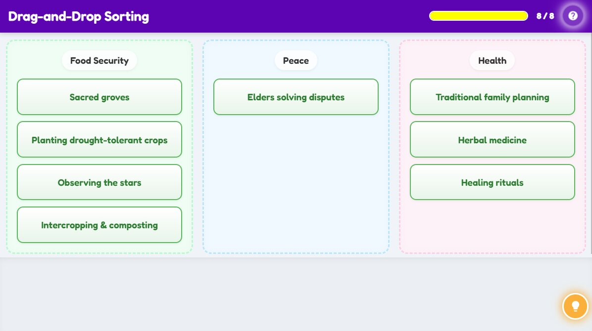

Communities across Africa used Indigenous Knowledge to meet their daily needs, from growing food to solving conflicts and staying healthy. In this activity, you will become a survival sorter! Your mission is to sort traditional practices into three lives, sustaining baskets; Food Security, Health, and Peace. Drag each card to where it belongs and discover how each practice helped people live better, longer, and stronger. Let us begin!

| Concept | Detail |
|---|---|
| Survival Solutions | Indigenous Knowledge Systems were crucial for survival, providing solutions for health, food, and environmental management. |
| Community Practices | Practices like using herbal medicine, predicting weather, and sustainable farming ensured communities could thrive. |
| Harmony & Well-being | These systems promoted long-term well-being and harmony with the environment. |
| Collective Wisdom | They also relied on lived experience, observation, and collective wisdom. |